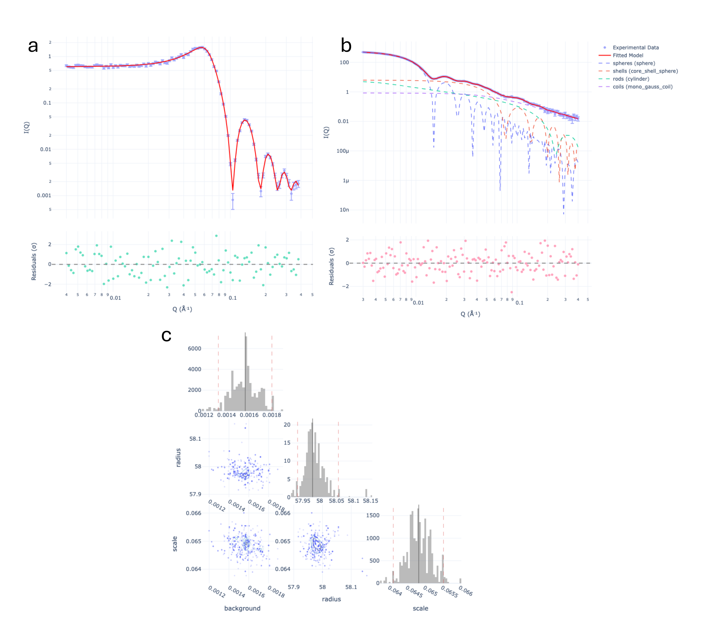

IQuana: Intuitive small-angle scattering data analysis
Oliver S. Hammond ![]()
Piotr Rozyczko
Thomas Holm Rod
Summary
Small-angle scattering is a powerful inverse structure determination technique, using neutrons (SANS) and X-rays (SAXS) to resolve nanoscale objects in their native environment(Gommes et al. 2021). IQuana provides a flexible and model-agnostic Python framework for the fitting of analytical particle shape and interaction models to this reciprocal space scattering data. This reproducible and scriptable approach functions primarily in Jupyter notebooks, as an accessible interaction pathway for the sasmodels backend library of SasView.
Statement of need
Over the past few decades, small-angle scattering analysis has evolved from pioneering early CLI software initiatives such as FISH, into predominantly GUI-centric initiatives, with major examples including SasView, SASfit, Irena and ATSAS (Shrestha et al. 2026; Breßler et al. 2015; Ilavsky and Jemian 2009; Franke et al. 2025).
Such initiatives have been powerful drivers of progress and allow effective exploration of datasets. On the flipside these packages present their own respective drawbacks, such as challenges in reproducibility and repeatability, automation and ease of scripting. Today a user may, for example, implement their own analysis code, and even SasView could be directly scripted, if that user is willing to assemble data objects, model kernels, parameterisation, resolution functions and calls to the optimiser– functionality which has been accrued across these major packages from years of frontier expertise.
We therefore pitch IQuana at groups including researchers, educators, students, and developers. We envisage these groups to use IQuana to produce reproducible, version-controlled analysis records to better meet today’s FAIR data demands.(Wilkinson et al. 2016)Didactically, we believe there is power in this tool which encourages the user to understand the chain of scientific decisions being made in the analysis process, exposing features which may be treated as black boxes in fully-fledged GUI software, ie. load_data > set_model > set_param > fit.
State of the field
Arguably the most widely-used open source package for small-angle scattering data analysis and model fitting is SasView and its accompanying model library sasmodels, which provides a large library of form and structure factors with native support for common file formats, polydispersity, and instrument resolution. Comparable toolboxes are provided by ATSAS,(Franke et al. 2025) SASfit (Breßler et al. 2015) and Irena(Ilavsky and Jemian 2009), and to some extent the NIST macros for Igor Pro are still in use(Kline 2006). It is possible to use general-purpose libraries such as SciPy (Virtanen et al. 2020) and lmfit (Newville et al. 2014) for these tasks, but scattering physics and file handling must be implemented.
Fundamentally, IQuana adopts a philosophy of not reinventing and reimplementing scattering models, optimizers, file handling and visualization. Instead, we build directly on SasView componentry including sasmodels for analytical fitting functions, sasdata for handling of small-angle scattering data files in community standard formats such as canSAS, and BUMPS, which provides the underlying reproducible optimizer framework.(Kienzle et al. 2026)
Software design
The primary design philosophy of IQuana is that it should mirror the concepts used by SasView for fitting, which facilitates good cross-checking practice, and commonality of user approach. Moreover, the state of the analysis should be explicit and open to user evaluation: one must be able to inspect plots without altering fit results, and to be warned of potential fitting pitfalls (e.g. a fitted parameter hitting a bound, or data without resolution information), without software silence. Finally, results are provided as rich display objects generally using Plotly (Plotly Technologies Inc. 2015) and not limited by a GUI implementation, but also given as simple plain Python data, allowing easy onward machine readability.
The IQuana class acts as a facade for underlying functionality. Data (such as CSV, CanSAS XML, NXcanSAS HDF5 including multiple-dataset files) are loaded via sasdata, which includes basic resolution function handling, weighting of residuals, and common dataset arithmetic operations (subtraction, multiplication, etc). A parameter manager then handles the fitting parameters in a manner consistent wth the loaded sasmodels kernel. Fitting engine access is provided using the same framework for BUMPS and SciPy, which therefore return directly comparable results. A FitReport is generated, which can be rendered as a notebook table, alongside a Plotly figure showing data, fits, and residuals.
We highlight here that IQuana exposes several of the increasingly popular features pertinent to modern small-angle scattering analysis problems in a full-workflow package. For example, after loading their data and subtracting a background, one could use the pr_inversion functionality to obtain indirect Fourier transforms of their data, and then fit it with combined \(\mathrm P(Q) * S(Q)\), multiple \(\mathrm P(Q)\), or with the Bayesian approach from the DREAM fitting algorithm(Vrugt et al. 2009). The user could then upload their fitting notebook as part of a publication, facilitating FAIR reproduction.

IQuana documented notebook examples, fits and residuals from using IQuana upon synthetic SANS test data; (a) a spherical form factor multiplied by a hard-sphere structure factor; (b) a fit of four convoluted form factors; (c) a posterior pair (corner) plot from a DREAM algorithm call to fit_bayesian for a spherical form factor.Research impact statement
IQuana began life as a pilot project, sans-fitter, and has since evolved into a much more full-fledged repository. The aforementioned primary intended audience is research staff for primary scientific research with wide-reaching potential impact. Beyond this, we see IQuana as an educational tool, which has already been used effectively in summer schools and undergraduate teaching curricula, for conveying challenging concepts around the analysis of small-angle scattering data.
AI usage disclosure
Human authors made all core design decisions, and reviewed, edited, and validated all AI-assisted outputs used in the development of this software. Tools used include Claude code, GitHub Copilot, coderabbit AI??? (Models, versions? )
Acknowledgements
We acknowledge the developers of SasView, sasmodels, sasdata and BUMPS, on whose work IQuana is built.